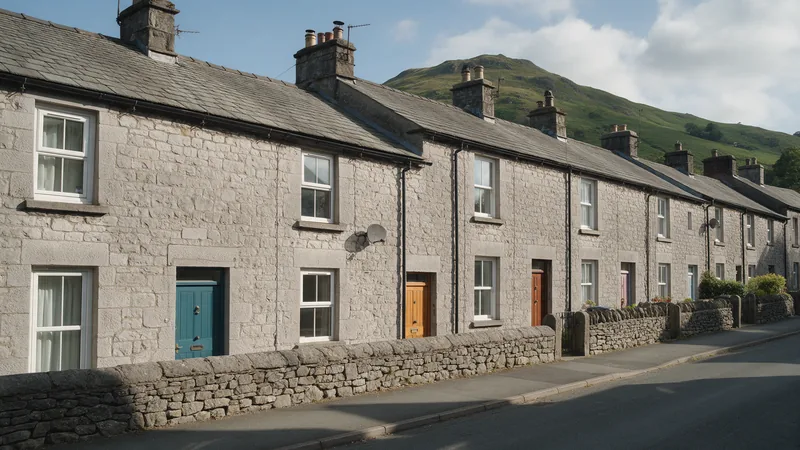
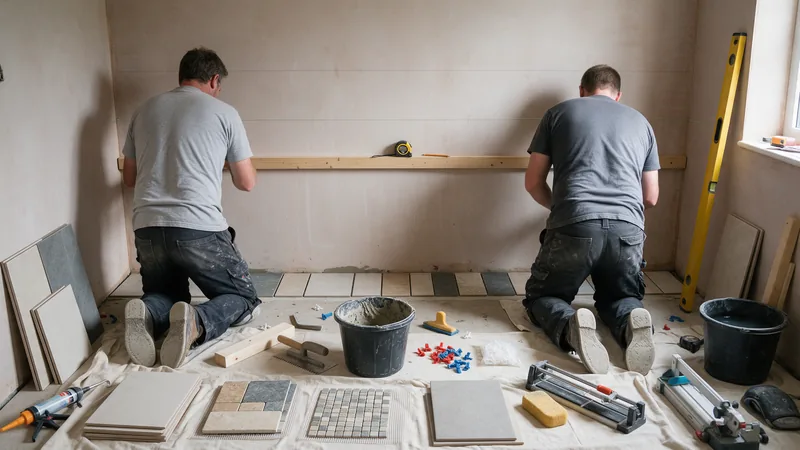

Home / Areas / Grange-over-Sands
Sample coverage
Tiling in Grange-over-Sands.
Bathroom walls and floors, kitchen splashbacks, large format porcelain, natural stone, regrouting and resealing and outdoor porcelain in Grange-over-Sands and round about. Grange-over-Sands is a real place. Tessgate Tiling is not a real firm, has no address there and has never worked there, because it has never worked anywhere.
What we get asked for in Grange-over-Sands
Mostly the same handful of jobs as everywhere: a bathroom that has not been touched since the last century, grout that has gone black in the shower, a splashback behind a new kitchen, and a floor somebody wants tiling and heating at the same time. What changes from place to place is the houses, and in Grange-over-Sands it tends to be older stone villas and bungalows near the shore, where the salt air is hard on sealant and outdoor porcelain, and the ground moves more than people expect.
None of that changes the method. A straightedge still goes on every wall before anybody quotes, the background still gets made flat and sound, the wet areas still get waterproofed behind the tile, and the cuts still get set out so they land where the room looks at them least. What it changes is how much of the week goes on preparation compared with tiling, which is exactly what we are working out when we come round.
What a visit looks like
Twenty minutes to half an hour. A straightedge across the walls and the floor, a knuckle tapped along anything already tiled, a look at the extractor and the window, a press on anything that looks damp, and a check of what the floor does when you walk across it. Then it goes in writing with the preparation and the tiling on separate lines.
A note on honesty
This is a demo page for a fictional firm, so there are no customer names, no addresses and no job histories on it, because inventing them would be inventing reviews. On a real site this is exactly where your own photographs from Grange-over-Sands would go, with a line each about what the wall turned out to be hiding.

Generated photoGenerated for this demo. Not a photograph of Grange-over-Sands.

Generated photoThe batten and the dry laid row. Twenty minutes that decides what the wall looks like for twenty years.
In Grange-over-Sands
What we would come out for.
Bathroom wall and floor tiling
Walls and floors, set out from the middle so the cuts land where nobody looks, and waterproofed behind the tile rather than relying on the grout to do it.
More →Kitchen splashbacks
The strip of wall between the worktop and the units, which is small, awkward, full of sockets and the one bit of tiling people stand two feet away from every day.
More →Large format and porcelain tiles
Big thin porcelain, two pairs of hands and a suction frame. The tile is the easy part. Getting the wall flat enough for it is the job.
More →Natural stone tiling
Slate, limestone, travertine and marble. Heavier, thirstier and more variable than porcelain, so it wants sealing, sorting and a floor that can carry it.
More →Regrouting and resealing
Old grout raked out and replaced, the internal corners taken back to bare and resealed. The cheapest job on this list and often the only one a bathroom needs.
More →Outdoor porcelain tiling
Patios and paths in outdoor grade porcelain, on a full mortar bed with a fall away from the house, because outside it is the water and the frost that decide how long it lasts.
More →Nearby
The other places on the list.
- KendalTiling in Kendal
- WindermereTiling in Windermere
- UlverstonTiling in Ulverston
- Kirkby LonsdaleTiling in Kirkby Lonsdale
Sample coverage for this demo.
Something wants tiling in Grange-over-Sands?
Tell us what it is and your postcode and we will come and put a straightedge on it.